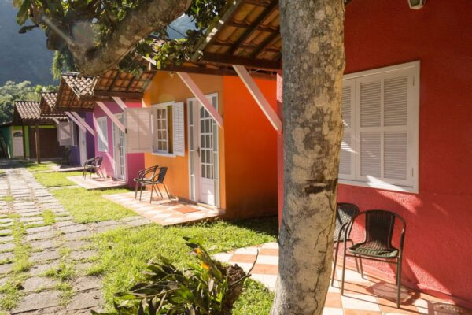

Pousada Recanto dos Lima



A Pousada Recanto dos Lima é um lugar para se estar em contato com a natureza e conta com a melhor infraestrutura rústica da ilha: piscina, amplo jardim para a prática de yoga e outras atividades, quadra de volley, sala de jogos, wi-fi, bar, restaurante, churrasqueira, passeios de caiaque e vários quiosques para você reunir sua galera e botar o papo em ordem com uma cervejinha bem gelada. Possuímos um Espaço Pet, para a diversão de seu bichinho de pequeno ou médio porte, enquanto você aproveita a viagem!
Ambientes acolhedores, estrutura completa e localização privilegiada garantem conforto e tranquilidade para o seu descanso entre mergulhos.